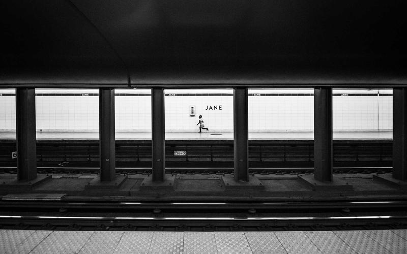

AppRecetas
Diseño de interfaz para una aplicación móvil de gestión de recetas
Diseño de interfaz para una aplicación móvil de gestión de recetas
AppRecetas es el diseño completo de interfaz de usuario para una aplicación móvil orientada a personas que cocinan habitualmente y quieren tener todas sus recetas organizadas en un único lugar. El punto de partida fue detectar que las soluciones existentes eran demasiado complejas para usuarios no técnicos o estaban pensadas para uso profesional.
El proceso comenzó con un benchmark de las principales apps de recetas del mercado, identificando sus puntos fuertes y débiles desde la perspectiva del usuario doméstico. A continuación se realizaron entrevistas breves a cinco personas con distintos niveles de experiencia culinaria para entender qué información necesitan tener a mano mientras cocinan.
Con esa investigación se definió el modelo de datos (receta, ingredientes, pasos, tiempo, dificultad, etiquetas) y se diseñó la arquitectura de navegación. Las pantallas se maquetaron primero en papel, luego en Figma con un sistema de componentes reutilizables para mantener coherencia visual en toda la app.
Año: 2025 | Rol: UX Research + UI Design | Duración: 5 semanas

El mayor reto de diseño fue el "modo cocina": el usuario tiene las manos sucias o mojadas y necesita interactuar con el teléfono de forma mínima. Después de varias iteraciones se optó por un diseño de pantalla completa con botones muy grandes en la parte inferior de la pantalla, zonas táctiles amplias y la posibilidad de avanzar al siguiente paso con un gesto de deslizamiento horizontal.
Otro desafío fue la importación de recetas desde texto libre. Definir cómo presentar el resultado del parsing (cuando la app interpreta el texto) de forma comprensible fue más complejo de lo esperado. La solución fue un paso de revisión donde el usuario confirma o corrige cada campo antes de guardar.